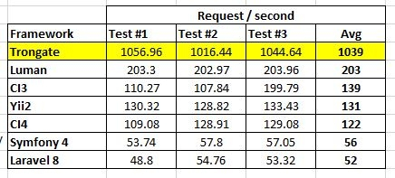

The Trongate framework is a perfect choice for developers who are interested in building large scale web apps that are scalable, stable and performant. Early benchmark tests suggest that Trongate massively out-performs every other popular PHP framework in terms of page load speed. Even micro-frameworks like Lumen cannot get close to the levels of performance that Trongate has!

There are two reasons why Trongate massively outperforms other leading PHP frameworks. Framework makers from elsewhere, take note!
If you understand the MVC software design pattern then you'll have no difficulty in understanding HAVC. That's because HAVC is a natural progression from MVC.